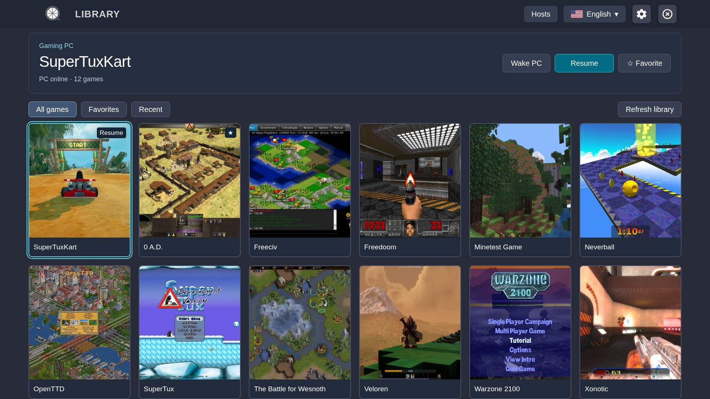
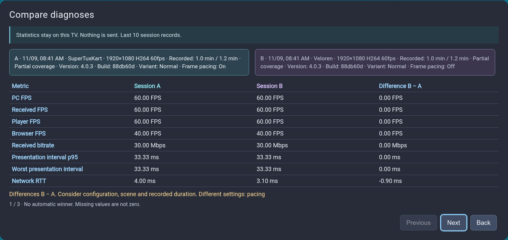

PC GAMING. LIVING-ROOM COMFORT.
Your games.
A bigger stage.
Bring your PC library to your Samsung TV. Pick a game, grab your controller and settle in.

FROM DESK TO COUCH
Three steps to your next session.
A PC, a compatible TV and a controller. We’ll guide you through the rest.
UNDERSTAND YOUR STREAM
A smoother setup starts with better answers.
Turn on statistics when you need them. Review your last ten sessions, compare any two, and see what changed.
Explore local diagnosticsOnly on your TV. Nothing is sent.

LESS GUESSWORK. MORE PLAY.
Your next step, right here.
Install & update
Choose a package, prepare the TV and keep your settings when updating.
PC & pairing
Set up the host once. Pairing links your TV to the right computer.
Play & game menu
Start a game, return to it and choose exactly how to leave.
Settings
Six categories, with the effect of each adjustment close at hand.
Controller mapping
Remap game inputs, check physical buttons and tune sticks without changing menu navigation.
Local diagnostics
Record deliberately, review locally and compare sessions with context.
Troubleshooting
Start with the symptom. Try one change and check the result.
About & references
VibeLight is a Moonlight Tizen fork for streaming PC games to Samsung TVs.